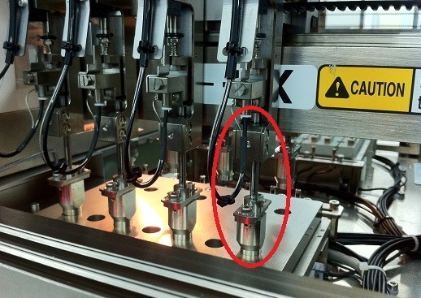

Service History
Subject: NS-8080 High UPH 8 Hands Input Hand A 2ack error
Handler Model: NS-8080 High UPH 8 Hands(S/N: s/n: 181594, H14-NS88)
Controller: RC520 (S/N: 03-02036)
Date: 30 Jan 2012
Symptom
Feedback by ASE, NS-8080 Input Arm Hand A having persistent 2ack error during homing, found out Hand A actuator with problem.
Action
We had replaced the defective Hand A from spare actuator in Getech Office but during master calibration we encountered servo error on hand B and we found out Hand B actuator’s ball spline shaft was bent.
We suspect it was due to mis-handling during production.
The handler’s 8IO hands were upgraded by Mikuni san last year 21 Oct which is still under 1 year warranty.
(See attached photo of the part highlighted in red which require replacement)

Cause
Ballspine of Hand actuator bent.